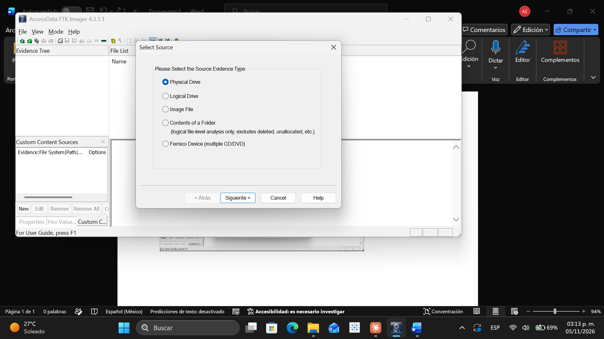
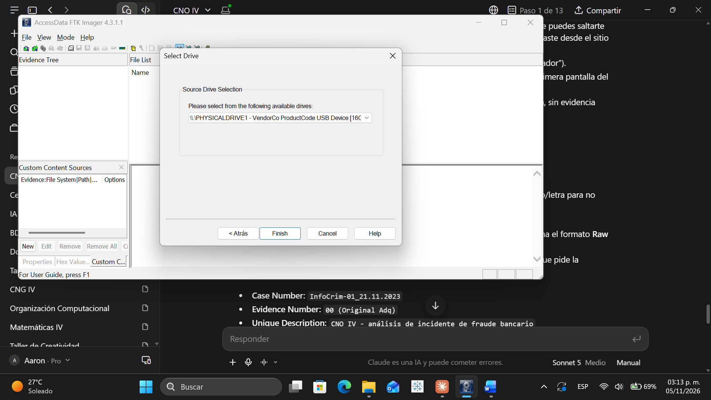
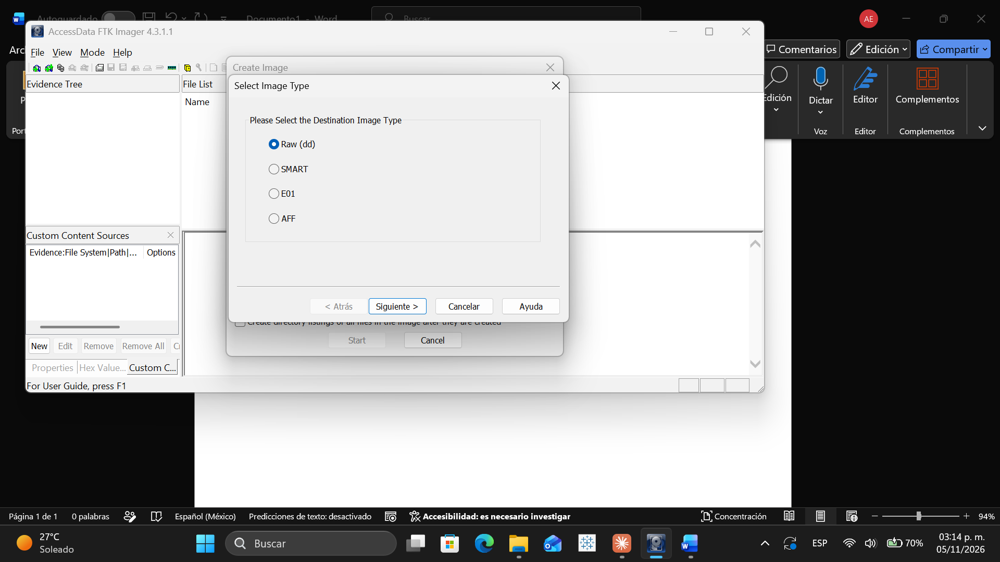
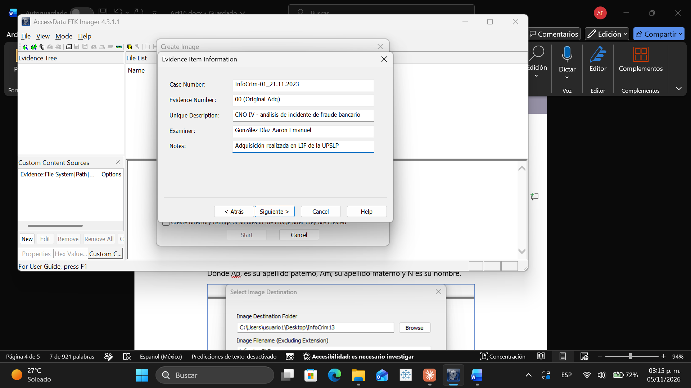
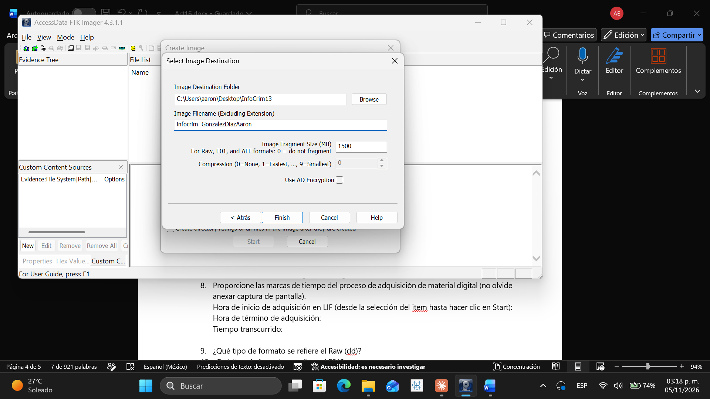
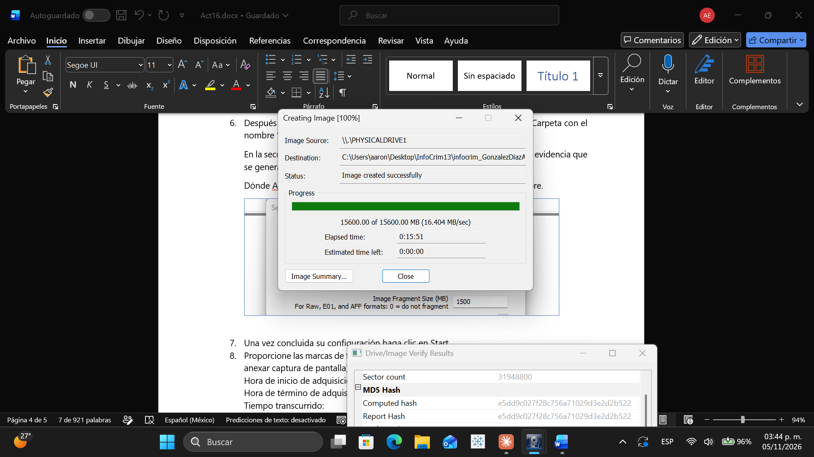
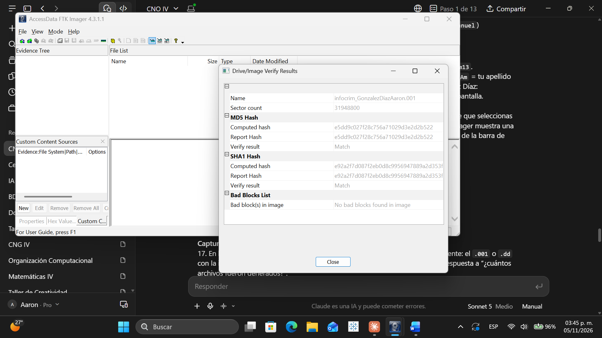
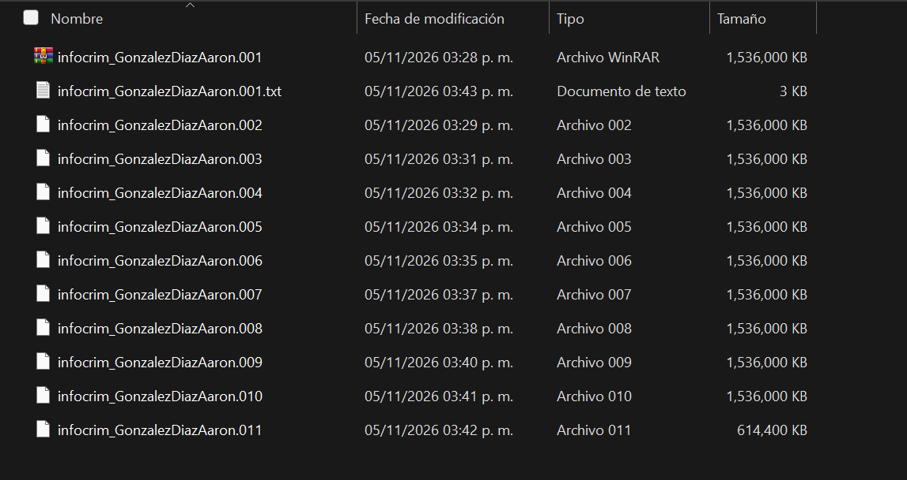

Desarrollar habilidades prácticas en la utilización de herramientas de código abierto para la
extracción de evidencia digital, comprendiendo la importancia de los metadatos y realizando la
adquisición forense de una memoria USB mediante una imagen bit a bit, utilizando
AccessData FTK Imager.
2. Datos del Caso
Case Number: InfoCrim-01_21.11.2023
Evidence Number: 00 (Original Adq)
Unique Description: CNO IV - análisis de incidente de fraude bancario
Se seleccionó Physical Drive como origen de la evidencia.

2.Select Drive — dispositivo físico
Se identificó y seleccionó la memoria USB: \\.\PHYSICALDRIVE1 — VendorCo ProductCode USB Device.

3.Select Image Type — formato de imagen
Se seleccionó el formato Raw (dd) como tipo de imagen de destino.

4.Evidence Item Information
Se capturó la información del caso mostrada en la sección 2.

5.Select Image Destination
Carpeta destino InfoCrim13 en el Escritorio; nombre de archivo (sin extensión): infocrim_GonzalezDiazAaron.

6.Marcas de tiempo del proceso de adquisición
Hora de inicio: jueves 05 de noviembre de 2026, 15:26:44 hrs. Hora de término: jueves 05 de noviembre de 2026, 15:42:35 hrs. Tiempo transcurrido: 00:15:51 (15 minutos con 51 segundos), reportado por FTK Imager en el campo "Elapsed time".

4. Preguntas Teóricas
1.¿Qué tipo de formato se refiere el Raw (dd)?
Es un formato de imagen forense "en crudo": una copia bit a bit exacta del dispositivo de origen, sin compresión ni metadatos adicionales embebidos en el propio archivo. Es universalmente compatible (puede leerse o montarse con prácticamente cualquier herramienta forense, incluyendo dd en Linux), aunque no incluye verificación de integridad ni información del caso dentro del archivo mismo; por ello FTK Imager genera un archivo .txt por separado con esa información.
2.¿Qué tipo de formato se refiere el E01?
El formato E01 (Expert Witness Format) es propietario, originado por EnCase, que comprime la imagen y almacena dentro del propio archivo metadatos del caso, del examinador, fecha/hora de adquisición y checksums (CRC32 por bloque y hash MD5/SHA del archivo completo) para verificar su integridad. Es el estándar más utilizado en el ámbito forense y legal, ya que facilita la cadena de custodia.
3.¿Cuál es la diferencia entre un formato SMART y un formato E01?
Ambos son formatos tipo "contenedor" conceptualmente similares —dividen la imagen en bloques e incorporan metadatos y checksums de verificación—, pero no son compatibles entre sí sin conversión previa. SMART es nativo de la suite forense para Linux ASR Data SMART, mientras que E01 pertenece a EnCase/Expert Witness y es reconocido de forma nativa por la mayoría de suites forenses comerciales modernas (EnCase, FTK, entre otras).
5. Resultados Finales
Sectores copiados: 31,948,800 Hash MD5: e5dd9c027f28c756a71029d3e2d2b522 Hash SHA-1: e92a2f7d087f2eb0d8c9956947889a2d353fd64e Verificación: Match en ambos hashes, sin bloques dañados ("No bad blocks found in image").

¿Cuántos archivos fueron generados?
Se generaron 12 archivos en total: 11 fragmentos de la imagen forense (infocrim_GonzalezDiazAaron.001 a .011, de 1,500 MB cada uno salvo el último), más 1 archivo de texto (infocrim_GonzalezDiazAaron.001.txt) con el reporte detallado de la adquisición.

Archivo de reporte (.txt) generado por FTK Imager
En el mismo directorio se generó el archivo infocrim_GonzalezDiazAaron.001.txt, con toda la información detallada del proceso: caso, examinador, dispositivo de origen, hashes y marcas de tiempo de inicio/fin de la adquisición y de la verificación.